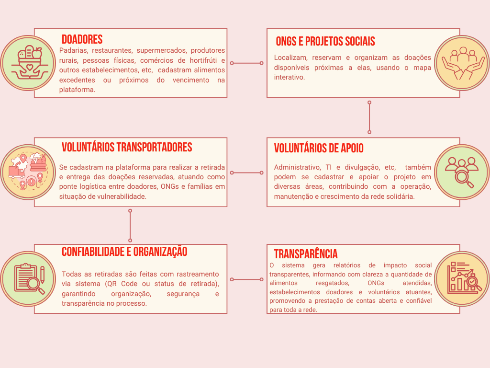

A ponte entre quem pode e quem precisa.
Uma iniciativa organizada para ligar quem tem o alimento a quem precisa dele.
Juntos podemos contribuir para a redução da fome e do desperdício.
Quem somos
Somos um grupo de estudantes do curso Técnico em Desenvolvimento de Sistemas, comprometidos em usar a tecnologia como ferramenta de transformação social. Nosso projeto, o Conexão Alimentar é fruto da união de conhecimento técnico e responsabilidade social, com o propósito de entregar uma solução digital que de fato impacte a vida de quem precisa.
Lívia Neves
Idealizadora do projeto.Atua como administradora deste sistema com foco em documentação, back-end e front-end.
Yasmin de Oliveira
Atua como administradora deste sistema com foco front-end e documentação.Jaqueline Costa Gomes
Atua como administradora deste sistema com foco em planejamento e front-end.Kaique Túlio Faria Brandão
Atua como administrador deste sistema com foco em banco de dados e front-end.Vinícius de Souza Matias Lopes
Atua como administrador deste sistema com foco em conteúdo e pesquisa.Como funciona
Por meio de geolocalização, conectamos pessoas dispostas a
ajudar, com instituições, ONGs e associações sem fins lucrativos que necessitam de
suporte, tornando a ação solidária simples e acessível com apenas alguns cliques.
Veja abaixo como é simples participar deste movimento transformador:
Junte-se a nós
Abrace uma nova forma de solidariedade!
Seja por meio de trabalho voluntário ou com doações de alimentos.
Com o auxílio da geolocalização, o aplicativo indica as
instituições, doadores e voluntários mais próximas de você,
apresentando atuação específicas de cada.
E você, ONG ou PROJETO SOCIAL, cadastre-se e visualize as doações
próximas a você.
Selecione um perfil abaixo:
DOADOR: Comércio
"Transforme alimentos que iriam para o lixo em esperança na mesa de quem mais precisa. Cadastre sua doação e faça parte dessa corrente de solidariedade!"DOADOR: Produtor rural
"Sua colheita alimenta mais do que estômagos. Doe o excedente e ajude famílias a se nutrirem com dignidade e frescor."DOADOR: Cidadão solidário
"Aquele alimento extra na sua despensa pode fazer a diferença na vida de alguém. Cadastre sua doação e leve carinho para quem precisa!"RECEBEDOR: ONG | Projeto social
"Encontre doações próximas, reserve alimentos e multiplique o cuidado com sua comunidade. Cadastre sua ONG e fortaleça essa rede do bem."VOLUNTÁRIO TRANSPORTADOR
"Seja o elo que move o alimento doado até quem mais precisa. Cadastre-se como transportador solidário e faça parte dessa missão!"VOLUNTÁRIO DE APOIO: TI, Adm, Marketing, etc
"Sua habilidade pode transformar realidades! Seja voluntário e contribua com o que você sabe fazer melhor para alimentar vidas."Depoimentos
O que falam sobre nós
Joana dos Santos | Dona de casa
"Eu tinha alguns alimentos, entrei no aplicativo e doei sem dificuldade.Gostei muito do atendimento do rapaz que recolhei as doações aqui em casa."
Luiz Eduardo | Voluntário
"Já fiz varios trabalhos transportando alimentos dos doadores para as ONGs. É muito bom poder ajudar."
Claudia | Adm na ONG: Criança feliz
"Recebo doações com frequência. Iniciativa como estar faz toda diferença na vida das pessoas. Com barriga vazia não tem como ser feliz, aprender, socializar. Que continuem com este trabalho".